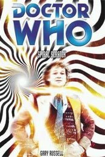

|
Spiral Scratch
|
BASIC PLOT DOCTOR One dressed in a somber black outfit with a cloak and a scar down the left-hand side of his face. (There are actually at least two of these, as they give inconsistent accounts of how Peri died.) Note that this sort of costume is one that Colin Baker has occasionally said he would have preferred. Then again nudity might have been preferable to what we got in the end. The 'main' Doctor also meets, off-screen, a future incarnation (pg 45), which is presumably the Seventh Doctor (but see below). COMPANIONS The one we know and love. One with a pigtail and a cropped red dress, who is an ex-slave from the Roman-Empire-Never-Fell Universe called Melina, also known as Technician 38. A half-Silurian version called Mel Baal. A number of other Mels fairly indistinguishable from the normal one. There are also cameos for Peri, Evelyn Smythe and Frobisher. MATERIALISATION CIRCUIT By Pg 85 On Earth, at Ipswich railway station, Boxing Day, 1958. Pg 110 The scarred, black-robed Doctor's TARDIS arrives at Brighthelmston, on an alternate Earth where the Roman Empire never fell. Pg 137 Another different Doctor arrives on Schyllus. Pg 168 The 'Prime' Doctor and Mel arrive on Carsus again. Pg 181 The 'Prime' Doctor and Mel have arrived near the Charing Cross Road, London, 1959. Pg 188 The (alternate) Doctor and Mel Baal are at Helen's birthday again, having materialized at the Narrah spaceport nearby. Presumably (see below) still 1958 in an Alternate Universe. Pg 206 Back on Carsus (although this is the Doctor who was last at the Charing Cross road. Are you paying attention?) Pg 238 In the Spiral Chamber on Carsus, although this is an alternate Doctor and an alternate TARDIS. Various other Doctors, including the original, all follow suit. Pg 274 The TARDIS leaves Carsus. Pg 276 On Lakertya, just in time for Time and the Rani. PREPARATORY READING CONTINUITY REFERENCES Pg 20 "I thank you for looking after us, but I am dying. I need to go home, back to the cave so we can find the five-sided exit to our own world." Julien is presumably using 'five-sided' to include time and space as well as the basic three dimensions, in a translation convention which has a resonance back to An Unearthly Child where Susan needed five dimensions and not three to solve a maths problem. Pg 25 "'Although it's probably better than Caliban.' 'And what's wrong with Caliban?' Mel frowned. 'Doctor, where have we just been? What has just happened to us?'" It remains unclear what has just happened to them (currently an unrecorded adventure) and Caliban has never been mentioned before (although it is, of course, a character in Shakespeare's The Tempest). Pg 37 "Do leave Mary alone. Since Mrs Travers left us, Mary does very well to cope on her own. I don't want to lose her, too." It's possible, but unlikely, that Mrs Travers was some sort of relation of Professor Travers and Anne from The Web of Fear. Addendum by J.A. Young: "Mary" and "Mrs. Travers" suggests Mary Poppins and her creator P. L. Travers, although Travers never married. "Just some papers, you know. From Oswald. Sorting out the Union, you see." This is Oswald Mosely, who we don't quite meet in Players. Pg 41 "Mel had since had a chance to change into clothing suited to what the Doctor had assured her was Carsus's hot and humid atmosphere - a slimming pair of white trousers, with matching ankle boots, and a puff-sleeved blouse, which the Doctor had remarked (when they'd bought it on Kolpasha a few weeks ago) made Mel resemble a well-wrapped boiled sweet." Mel has changed into her costume for Time and the Rani, which should give you a hint as to how this book ends. Kolpasha is the location for the Fourth Doctor comic strip Victims, and is the place where you go to buy fashionable clothing. Pg 42 "And the TARDIS exterior doors suddenly opened, followed a second later by the Doctor, taking deep breaths as if he'd been running." The TARDIS is in flight at this point, so really Mel and everyone else should have been sucked out into the Vortex as Salamader was in The Enemy of the World, or everyone should have been shrunk, as they were in Planet of Giants. It doesn't happen because the opening doors are in the Universe in which the Doctor who comes through them comes from, and, in that Universe, the TARDIS has landed somewhere. You've just worked that out, when you're told it on Pg 44. Pg 45 "'You're familiar with the Time Lord ability to regenerate, yes?' Mel nodded. Her brief time on Gallifrey had exposed her to that concept." This explains why Mel tells the Seventh Doctor that she knows 'about regeneration, of course' in Time and the Rani, whereas otherwise there would have been no need for her to have known. The Doctor meets a future self: "Rather as you can remember dresses, t-shirts and coats you've owned, I remember my past bodies quite well. The one in the corridor wasn't one I knew." This is presumably the Seventh Doctor, as we are so close to Doctor Six's regeneration. An alternative possibility is that it's a watcher figure, as we saw in Logopolis. (See also the resolution to the big Spiral Scratch/New Adventure Continuity Cock-Up.) Pg 53 "Such are the vagaries of the twists and turns of time; the element of chance that with each breath, with every decision taken, creates ripples that cause timelines to go left rather than right." This incredibly grammatically poor sentence (it should be either '...each breath, every decision taken, creates ripples...' or '...with each breath, with every decision taken, ripples are created...'; you get the feeling that Russell was asked if he wanted a coffee mid-way through writing it) resonates with the Doctor's famous conversation in the cafe in Remembrance of the Daleks. Pg 57 The Time Lords are described as "actually doing little except scoop up the universe's flotsam and jetsam and - if it's of any value - claiming it as theirs." This may be a reference to the Time Scoop from The Five Doctors et al. Pgs 57-58 "No one else ever got a look in, archaeologically speaking, because they lived under the constant threat that if they argued with the Time Lords, the Time Lords would put a time bubble around them/their university/their planetary system and reverse time. Not only would they no longer exist, they never would have. Time Lords are like that. Gits. Pompous gits of the first order. No one likes them very much. Because they're gits. Big, fat, smelly ones. 'This is a very... biased view of the Time Lords,' Mel said slowly, closing the book. 'Hmm,' mumbled the Doctor. 'Picked that up a few years ago on the Braxiatel Collection, written I believe by some grumpy professor or another. Apparently she had a bit of an anti-Time Lord stance in a lot of her published works.'" Naturally the book is clearly meant to have been written by none other than Professor Bernice Summerfield, who the Doctor, of course, has yet to meet. Her rant here may have something to do with what may well happen with Braxiatel in the ongoing Bernice Summerfield series, since it's not all that consistent with how Bernice and the Doctor parted company. We shall, undoubtedly, see. And, for the record, the Braxiatel Collection was first mentioned in City of Death and first visited in Theatre of War. Pg 59 "Like me, he left his home, his peers and superiors to see the universe. He... he collected things." Rummas, it turns out, is yet another renegade Time Lord. It's quite amazing, by this point, that there's anyone left on Gallifrey at all. Pg 61 "Brighton has a good selection in its library." Mel refers to Brighton, near her home village of Pease Pottage, and the place where she met the Doctor in Business Unusual. The Doctor wrote a book: "'Wrote it on a long journey to Mars when I'd lost the TARDIS in a ga- well, in a moment of madness.' '"In a gay"?' quoted Mel, then it hit her. '"In a game"! You gambled the TARDIS in a game and lost.'" An unrecorded adventure, although it does sound a bit like Marco Polo. And see Continuity Cock-Ups. The subject matter of said book turns out to be... Pg 62 "the history of Gumblejack fishing in the eighth galaxy." Gumblejacks were mentioned in The Two Doctors and have become something of a staple of fan fiction since that time. "All over the twelve galaxies." The twelve galaxies as an area is mentioned in Dragonfire. Unless things have changed markedly by that time, this is presumably an area of space, rather than a description of the whole of it. Mention of Peri, and her manner of speech. Pg 65 "Apart from Carsus itself, we have Minerva and Schyllus nearby, then, as you get closer to the edge of the system, there's Tessus, Lakertya, Molinda and, at the fringes, the lifeless gas planets of Hollus and Garrett." The Minerva system is the location of the action in The Fall of Yquatine (although this may not be relevant, or even the same Minerva system), while Lakertya is the location for Time and the Rani (note that this fits with the TARDIS taking off at the end of this adventure and flying straight into the Rani's beam in, we would initially assume, the same time period - but see below). The others are locations we've never visited before, although the lifeless gas giants Hollus and Garrett sound suspiciously like the UK Health Food chain of shops Holland and Barrett. Pg 66 "And there are reports of strange matter fragments, chronic threads and even a rumoured supernova in the distant past that didn't result in a black hole but just vanished off the cosmic map." This is about to occur (if you see what I mean) in Time and the Rani, one assumes, although that means the Rani's beam didn't grab the Doctor in this time period at all. Presumably it was as he was travelling backwards. Also see Continuity Cock-Ups. Pg 67 More planets are mentioned: Halos III, V, Utopiana and Narrah. None have been visited before, but V may be a reference to the mid-'80s Sci-Fi series bore that title. Others are visited in this very book. Pg 68 "A pang for Sussex and particularly a pang for her parents." We went there and visited them in Business Unusual. Mel remembers getting a Christmas present which read 'To Mel, lots of love, Uncle John.' We met Mel's Uncle John in the audio Catch 1782. Pg 74 "There's never flux nor can time change its state." This is a misquote of the famous statement in The Deadly Assassin. It has been used in numerous audios, particularly Russell's own Neverland, as well. Pg 75 "The Doctor's face was then replaced by Rummas's, who told the Custodians to go and check something called the Time Path Indictor." The TARDIS has one of these; we have seen it in The Dark Path, Timewyrm: Genesys and Timewyrm: Apocalypse. Pg 77 "'Mel has an elephantine memory.' 'Charmed as always, thank you Doctor, by that comparison.'" Mel's eidetic memory, and her delight or otherwise at being compared to an elephant, were both seen in her first appearance in Trial of a Time Lord, episodes 9-12 (Terror of the Vervoids). Pg 86 "Nevertheless, the Doctor was acting as if it were Antarctica, Lapland and Alaska rolled into one with a wind machine turned on full; puffing, panting and generally berating the weather for not being what he wanted." The Doctor appears to lack the resistance to cold that he demonstrates in, among other places, Iceberg, but I think it's just that this Doctor likes having something to complain about. There's a reference to John and Connie, which is meant to imply John Cleese and Connie Booth, writers of Fawlty Towers. Pg 88 "The car pulled up and the Doctor showed the chauffeur the invitation, with THE DOCTOR and MISS MELANIE BUSH miraculously inked in where it had been blank moments before." It's possible that the invitation is printed on psychic paper, as introduced in The End of the World. Pg 95 "'Roll on Woodstock,' she muttered." Been there, done that, in Wonderland. Pg 98 "'I was doing well there,' he said grumpily. 'Telling them all about our adventures with the Zarbi and the Proctor of Darruth.'" The Zarbi are from The Web Planet and Twilight of the Gods. The Proctor of Darruth remains uncertain, as does the adventure to which the Doctor is here referring. Pg 104 "As I remember from spending time with your delightful parents, I believed you were an only child." Business Unusual. (As an aside, one of the best bits of this book by far is the ret-conning of an older, deceased sister into Mel's life.) Pg 115 "'Of course, you never met the Doctor's friend from the New World. A charming savage whom the Doctor tried to educate in our ways, to raise her from the dark to the civilized world.'" This is reference to an alternate Peri... ... who "'died saving me. A noble sacrifice, made during the battle that scarred my face, with an enemy of the Empire, Dominicus.' Rovia nodded. 'I remember him. Pure evil.'" It's possible that Dominicus, given its translation, is an analogue of the Master. Meanwhile, the use of the phrase 'pure evil' puts us briefly in mind of Fenric, so it could have been that instead. "After you did us that service with the reptile monsters." This sounds like The Silurians, but, given that this is an analogue Bob Lines, it's probably The Scales of Injustice. Pg 116 "It's the masterboard for the image translator in the TARDIS." This device was seen in Full Circle. Pg 120 "The course is set up and ready - the stardragsters start from just beyond the moon, and speed off towards Mars, onto the rings of Saturn." The solar system being turned into a race-course rings bells with the plot of Enlightenment. "Thus it was incredibly easy for The Human Bullet to be marketed by his manager as a drop-dead gorgeous hunk, rather than a weedy unmarried nerd who hadn't quite mastered the art of a daily shower and deodorant use." It's not really continuity, but this suddenly put me in mind of the absolutely horrid section in Divided Loyalties which dealt with Adric's lack of personal hygiene. So I thought I'd remind you of it too. Russell's got some sort of issue with this problem, it would appear. Which is unfortunate for us all. Pg 125 "The Doctor had once given him a tiny green ball that, he had said, was to be used in emergencies. Linus gathered it was some kind of alter beacon, which would draw the Doctor back to Earth if used." This sounds like the famous Space-Time Telegraph of Terror of the Zygons and beyond, although, lacking a Brigadier in this Universe, the Doctor appears to have given it to someone else. Pg 126 "After centuries, the Roman Empire is still built on slavery." As the Doctor said in Terror of the Vervoids, 'came to a pretty nasty end, though, didn't it?' This might be a deliberate reference to that story. Pg 129 "Linus was looking at the Doctor and the girl. Except, for just a split second he wasn't. Not quite. Instead, he was in a wholly different room, surrounded by wholly different people. The only constant was the Doctor and the girl. Except the Doctor was in a ridiculously colourful coat and trousers. His smiling face was unscarred, and he seemed to have a somewhat healthier glow to his skin." This is a brief flash to the first meeting of the real Doctor and the real Melanie in Business Unusual. It's also the only point in the entire book other than dialogue or thought-process that carries an implication that there is a 'prime' Universe and all the alternatives are somehow less than that main one. It still doesn't explain why that is the case, however. Pg 140 "Melanie had been in enough tight situations with the Doctor since their first meeting in Derby." This is the first hint we get that this is an Alternate Mel, although they may well have experienced the events of Business Unusual, just in a different location. Presumably it's Derby because that was the location of Doctor Who and the Silurians, and this version of Mel is half Silurian. Pg 142 "My name is Mel Baal, but my friends call me Melanie." The half-Silurian Mel appears to have inherited her father's name as her surname; Baal appeared in The Scales of Injustice. That said, in The Scales of Injustice, Baal was nowhere near Derbyshire, but presumably that's another inconsistency that has occurred as a result of the various alternate universes in play at the moment. (In another nice touch, this version is actually called 'Mel' but her friends call her 'Melanie' rather than the other way around.) Pg 148 "A clever interstitial trap." The Time Monster and Falls the Shadow both also rely on Interstitial time for their plots. Pg 154 "A Lamprey. Creatures that exist within the space-time vortex, able to co-exist in multiple locations at once but feeding off chronon energy." The Lampreys may well be a species related to the Sphinxes of Dead Romance. This is possibly corroborated by the Doctor's comment, further down the page that "Back home, my people spent millennia studying these creatures, trying to find a way to keep them locked away from pure existence." Pg 157 "As you pointed out when we left Ariel." This is quite clever, given that the 'Prime' Doctor and Mel had just left Caliban, while this alternate Doctor is just leaving Ariel. Ariel and Caliban are both characters - and indeed opposite numbers - in Shakespeare's The Tempest. As a continuity point, we've never been to Ariel either. Pg 161 Reference to the APC Net, part of the Matrix (or vice versa) first introduced in The Deadly Assassin. Pg 162 The report is signed by one Coordinator Rellox of the Arcalian Council for Temporal research. The report has been 'acknowledged but suppressed by order of President Pandak III.' We haven't met Rellox before, but Arcalians are mentioned in various Gallifrey audios. Pandak III was mentioned in The Deadly Assassin. He also is the one who suppressed Rassilon's writings in the John Peel book The Gallifrey Chronicles (not the Eighth Doctor story). "Mel deactivated the monitor, and the TARDIS data bank whirred and sunk back into its recess on the console." We saw this in various stories, but particularly Castrovalva and The Five Doctors. Pg 174 "'Well, that's Mel for you,' explained the Doctor as she hurried away. 'Scatterbrained to the end.'" This is blatantly untrue, as well the Doctor knows, so one can only assume it's some sort of plot point. That said, I'm not clear on what it was. Mel's birthdate is given as 22nd August 1964, which does square with everything we know. That means that she was born the same day that the third episode of The Reign of Terror was broadcast. Pg 175 "Mel took a moment to digest this. 'You know when you're going to die?' The Doctor smiled sadly. 'Not to the minute, but as that time approaches, one has... twinges. A certain preternatural instinct. But we go ahead anyway because what will be, must be.'" This is consistent with the way that the Doctor feels in The Room With No Doors. It's also possibly a result of the Doctor having met his future self earlier in the novel, much as the Fourth Doctor did in Logopolis. Pg 190 A brief throwaway reference to Lakertya again, location of Time and the Rani. Pg 193 "'Am I still there?' the Doctor asked her, not wanting to look in the direction she had pointed. In case another him was here. Which would not be a good thing." Blinovitch, as first mentioned in Day of the Daleks. The logic of the multiverses would appear to be wearing a bit thin here, as the two different Doctors and two different Mels are actually at different events, in different places, in different Alternate Universes, but by this point the strain on the multiverse has clearly proved too much and nothing is simple anymore (which is clarified in the narrative a few pages later). Pg 194 "'Which is lucky as too many Doctors spoil the broth.' 'But how has this happened?' The Doctor wasn't sure. Twice in one lifetime was bad enough, but time playing tricks twice in one day..." Twice in one lifetime is presumably a reference to the Doctor meeting other versions of himself, and therefore we assume he is referring to the Second Doctor in The Two Doctors and the Valeyard in The Trial of a Time Lord. He appears to have omitted the Eighth Doctor popping into his life in The Eight Doctors, but I think most of us would like to do that. He has also omitted The Sirens of Time, Day of the Daleks and possibly other occasions. Reference to Martians, Sontarans and Pakhar. The Martians first appeared in The Ice Warriors, the Sontarans in The Time Warrior and the Pakhar in Legacy. Pg 195 The Doctor repeats his earlier comment about the Zarbi and the Proctor of Darruth and I'm no wiser than I was earlier. Pg 206 "He glanced up at the scanner, and Mel saw a number of TARDISes, Police Box-shaped TARDISes at that, hovering out there." This is very like The Last Resort, albeit rather less confusing. "He eased himself past an oblivious Doctor (this one is shirt sleeves, reading a book called The Lost Empires of the Planet Chronos.)" Chronos was the location for the icast and audio Real Time. Pg 212 "And the lovely Hallams on her mother's side." We meet Mel's relatives, the Hallams, in the audio Catch-1782. Pg 215 "And that you, personally, are responsible for everything that has happened here due to your own stupidity, vanity and utter disregard for the laws of time, chaos and any other number of unbreakable tenets of logic and reason instilled in us by the likes of Delox, Borusa and our others [sic] tutors at the Academy." Borusa first appeared in The Deadly Assasin, Delox in Divided Loyalties. Come to think of it, it seems odd in retrospect that Rummas didn't appear in Divided Loyalties, but at least, thank God, we are spared another flashback to the Doctor's days at the Academy. See, inevitably, Continuity Cock-Ups. Pg 216 "Or were you just two stupid chumps obeying without question the orders of this utter cretin stood here?" OK, no continuity at all except that it's the Sixth Doctor spot on. A quite marvellous line. Pg 219 "A stone sinks in a pond, Doctor, but the ripples don't stop, until they hit the edge of the banks, rebound and gradually smooth out." This, again, reminds you of Remembrance of the Daleks. Pg 221 Mel's home is given as 36, Downview Crescent, Pease Pottage, Sussex, as we visited in Business Unusual. Yet another annoying reference to the Zarbi and the Proctor of Darruth. Reference to Daleks and Pakhars. "Then there's the flat in Goldhawk Road she shared with Leonora, Julia and, in those final few months, Jake. That's where friendships were formed, growing up was achieved and virginities (of just about everyone who ever stayed for more than a week) were lost." Not continuity again, but just far too much information. Pg 222 Mention of Alan and Christine Bush from Business Unusual. Pg 236 "Of course. She was Brown Perpugilliam. Peri. She was strong, forthright and brave. She... she died despite my attempts to save her from a barbarian king, Yikkar, who decided she was his property." This seems to be an alternate version of The Trial of a Time Lord, episodes 5-8 (Mindwarp). It's inconsistent with what we learn earlier, but this would appear to be a different, yet very similar, version of the Doctor. Pg 240 "All three versions of the Doctor touched their foreheads, repeated the word 'contact' and, after a few seconds, relaxed." This form of telepathic communication between the same Time Lord was pioneered in The Three Doctors (see also Continuity Cock-Ups for the issue of having the same people wandering about). Pg 251 "But Mel hung onto the tubing, now a good twenty feet above their heads." It's probably not deliberate that someone ends up suspended from wires some distance up a la Logopolis in this particular story. Pg 256 "'Goodbye, Mel,' he replied, softly and closed the door behind him." The Doctor does know that he's going to regenerate. This bit's quite nice. Pg 259 "And that's what the Doctor had become to Mel. A father figure. She could see that now. Especially during those moments where she longed for home, for her parents - and although that sadness would never go away, in so many ways the Doctor had supplanted them." This is probably true for many companions, but it's interesting to note how, in the new series, the Doctor has become the love interest rather than the father figure. Just something to think about, I suppose. Pg 260 "And for the first time in their (oh how many months was it now?) travels." I wouldn't mention it but for the fact that Gary Russell is in charge of the Big Finish audios, but, given the events of the audios Catch-1782 and The Juggernauts, it's not months, now, but years. Presumably Mel is thinking in terms of 18 months or 30 months or some such. Pg 261 "One Doctor, hands behind his back as he gazed at the crucible in wonderment, was stood with a pretty young brunette in a bright pink tee and clashing blue shorts." This is Peri. "Nearby, a Doctor in a coat made up entirely of differing shades of blue was with a woman in her fifties." This is Evelyn Smythe, and the blue coat was introduced in the audio and icast Real Time. "Mel's attention was then drawn to an identical hued Doctor further back with the same woman, although this one had metallic implants down the left side of her head, arm and chest, like some kind of cyborg." This is the Evelyn Smythe who carried the cybervirus back in time after the events of Real Time. "Another Doctor was talking to - Mel couldn't quite believe this - what appeared to be a penguin." This is Frobisher (Mission: Impractical, some audios and the comic strips). Pg 263 "What the hell do you think is going on here, girl? You think I want to see this? A Time Lord sacrificing not just this life but possibly all his future ones, maybe his past ones, everything he's got, just to save a universe that really doesn't deserve saving?" All right, I may be critical of this book, but the last couple of chapters are quite wonderful, and if anyone can come up with a better description of the Doctor's entire reason to be, then I will be impressed. It's quite remarkable and very powerful. Pg 266 The Daleks and Cybermen are described as 'nonsensical dangers', a description that they may well take issue with (however true it might be). "'Chronon energy,' Rummas mumbled. 'Without it, a Time Lord will age and die. It keeps him together as he crosses the timelines.' He looked at Mel. 'It infects those that travel with him too, keeping you young, stopping your personal chronological energy from going haywire.'" This is quite nice in many ways, and is consistent with Leela's treatment in the Gallifrey audios. That said, it doesn't fully explain Ian and Barbara's aging during their travels, the upshot being that they had to go back to two years after they had vanished when they returned to Earth in The Chase (presumably the Doctor, unaware of how to share his chronon energy, didn't do it then). Pg 269 "Every ounce of chronon energy they'd previously shared pouring into the apex of the Spiral, shattering the sides, gouging away the spirals, and hitting both the Doctor - her Doctor - and the screeching Monica/Lamprey, feeding them both so much energy. 'Nothing can take that much energy.'" This is, interestingly, almost the same way the Ninth Doctor lost his life in The Parting of the Ways. Pg 274 "... Who just this once she could believe was 900-plus years." 953, to be exact, as Time and the Rani is about to make clear. Pg 275 "Don't cry, Mel. It was my time. Well, maybe not, but it was my time to give. To donate. I've had a good innings you know, seen and done a lot. Can't complain this time. Don't feel cheated." A possibly ironic statement of the fact that Colin Baker did indeed feel cheated and, in retrospect, we were probably cheated of the best that he could give. It's also, by the by, a rather nice pre-regeneration speech. "'Yes. Yes, it is...' she heard him say, but the words seemed to be in her head rather than coming from his closed mouth." This is identical to the end of The Caves of Androzani, where the Doctor goes into freeze-frame, but continues to talk. "Then the TARDIS lurched violently, once, twice, three times. The Doctor was rocked out of her hands and he curled up, facing the bottom of the console. 'Local... tractor beam...' he said." This is the Rani's beam, from the opening moments of Time and the Rani. Pg 277 "As unconsciousness took hold, she was sure there were people there. They moved towards her and as she finally succumbed to complete sensory deprivation, she heard a strident female voice barking out an order. 'Leave the girl. It's the man I want.'" The rest of the opening moments of Time and the Rani. OLD FRIENDS AND OLD ENEMIES Praetor Linus, in the Roman-Empire-Never-Fell world, is an analogue of Bob Lines from The Scales of Injustice and Business Unusual. NEW FRIENDS AND NEW ENEMIES Goodewife Edith Barber, Erwick Barber, Brother Ralph, Daisy, Twisted Jude, The Abbot. It's unclear whether Squire Richard de Calne dies or not, but he's never seen again. In Bucharest, 1948 AD: Dr Emile Schultz and his wife Hilde. Yurgenniev. Some random communists on an inquisition-style panel. On Carsus: Professor Rummas. Mister Woltas and Mister Huu. On Earth in 1958: Mr Diggle. Miss Garvey. Letitia. Baker, the Chauffeur. Mrs Phillips. In Utopiana City, Alternate Earth: DiVotow Nek and his family, which include his new baby brother, Toli Nek In the Roman-Empire-Never-Fell Earth: Captain Rovia. In the race-course Unvierse: A sports commentator. Kevin Dorking, known as the Human Bullet. On Schyllus, in 4387: Kina. Hemp. Marka. On an space station in an alternate universe, the date possibly being 1958: Mr Xxerxezz, a Narrahhan. Chakiss, an Arthropod. Letitia (again!) Given the number of alternate universes and people that keep swapping about, it's difficult to know which of the various members of the Lamprey family actually survive the novel. Non-alien Lampreys, then, who may survive, include Elspeth Lamprey (wife of Sir Bernard) and the Honorable Helen 'Lucky' Lamprey (his daughter). Members of his household include Mary and Thompkin.
CONTINUITY COCK-UPS PLUGGING THE HOLES [Fan-wank theorizing of how to fix continuity cock-ups] FEATURED ALIEN RACES Schyllans, who are basically human, but can transfer their personalities into others of their race in what appears to be some sort of timeshare basis. Silurians. A rock creature which speaks with multiple voices sounding like a ton of heavy stones. A Narrahan. An arthropod race. FEATURED LOCATIONS Pg 6 The village of Wulpit, somewhere near Wikes, in Suffolk, England during the Eleventh or Twelfth Centuries (there is a reference to the resting place of King Edmund, the King of East Anglia, who was martyred in 870AD, but also to the Norman Invasion of 1066). Pg 26 The Politehnica Unicersitatea din Bucaresti and various houses, in Bucharest, Romania, 1948 (but see Continuity Cock-Ups). Pg 35 The Lamprey's family house, some time in 1949. Pg 39 The A140, near Stowmarket and Eye. Pg 45 On the Mediterranean Sea, 1948 or 1949 (probably the latter). Pg 52 In a Graveyard, 1966 (Mention of The Sun Ain't Gonna Shine Any More by the Walker Brothers which was No. 1 early that year. References to 'Nancy's kinky boots' is not actually a reference to the cult song 'Kinky Boots' (Honor Blackman, 1964), but to Nancy Sinatra's 'These Boots are Made for walking', also a No. 1 in early 1966. The 'kinky' reference is somewhat misleading, then). Pg 57 The Library of Carsus Pg 79 The Lamprey home, Wikes Manor, in Wendlestead, near Ipswich, Earth (or one of them - in this case, it would appear to be 'Earth-Prime'), Boxing Day (December 26th), 1958. Also Ipswich Railway station and the Corn Exchange. Pg 106 An alternate, 'ideal' Earth in the future, in a park near Utopiana City. Pg 110 An alternate Earth where the Roman Empire never fell, including Brighthelmston in Europa, 1986 (the equivalent is Day 156,0037 of the forty-eighth Julian calendar, but the Doctor makes it clear that it's 1986.) The Empress Margarita is on the Roman throne. In this reality, America is filled with untamed hordes, while Europe still practices slave labour. Pg 117 Another alternate universe in which the Nazis blazed a 500-year campaign of terror, ending in their annihilation as Earth itself is destroyed. The planet we are on here is called Halos V. It's, presumably, somewhere around 2433 or thereabouts. Pg 120 Yet another alternate universe, in which very fast-moving races take place around the planets of the Solar System. We pass various planets, ending up at Phobos. The date here is very unclear, but it's sometime in the future, given that Earth has a capital city, Tallin. Pg 131 On Prime Earth again, at Flat 6, somewhere in London, one presumes, residence of the Tungards. Sometime in 1959. Pg 137 Schyllus in 4387. It's unclear whether that's Earth dating, but it is clear that this is another Alternate universe, given that Mel is half-Silurian. Pg 143 Back on Prime Earth, somewhere on the A5 near West Hampstead, again in 1959. Pg 164 Within the Spiral, an aspect of the Time-Space Vortex. Pg 176 A restaurant tucked away behind the Charing Cross road, again in 1959 on Prime Earth. Pg 188 A space station, in Narrah space, at Helen Lamprey's sixteenth birthday bash again, presumably Boxing Day (December 26th), 1958 (it makes no sense for the alternate Helen Lamprey to be having the same birthday party in a different time zone - the world is different, the time is not). It's possible that this is the Alternate Universe that Mel Baal comes from, but it's not certain. Pg 210 Carsus again. Pg 230 Janus 8 Pg 237 The Spiral Chamber, on Carsus. IN SUMMARY - Anthony Wilson |
|
 |